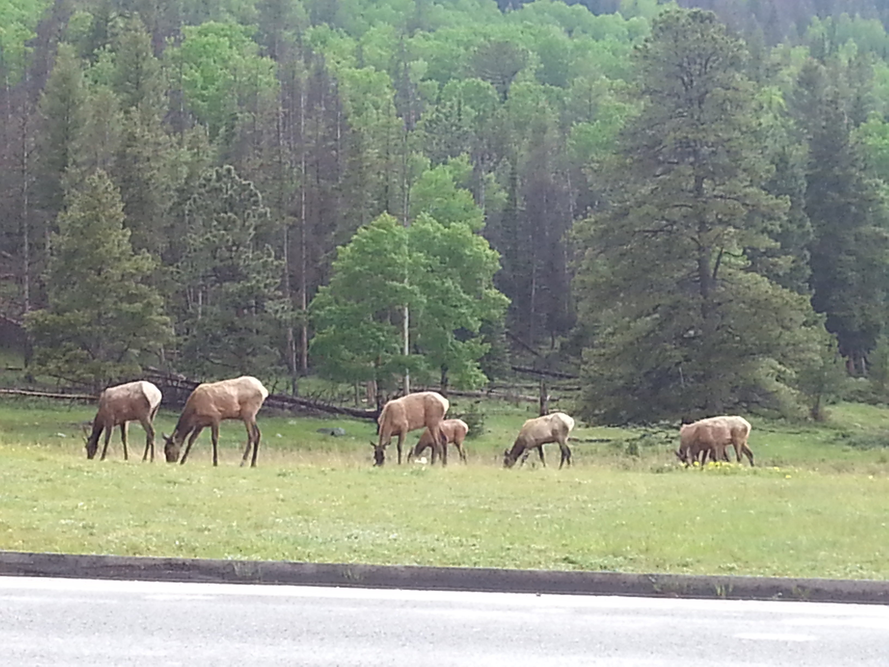
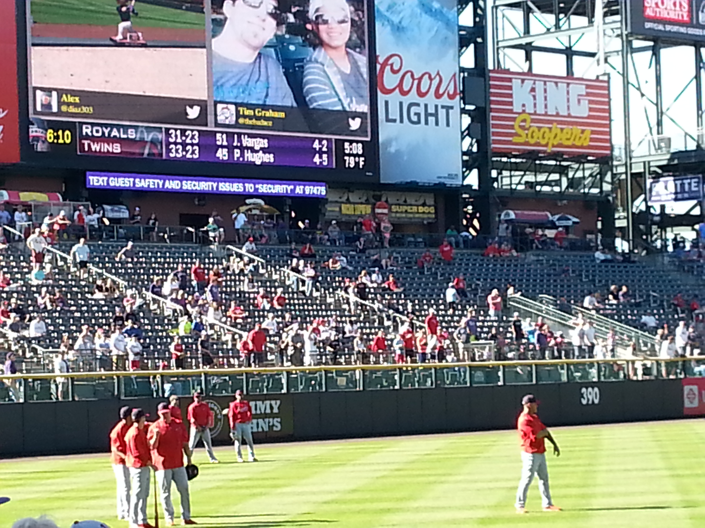
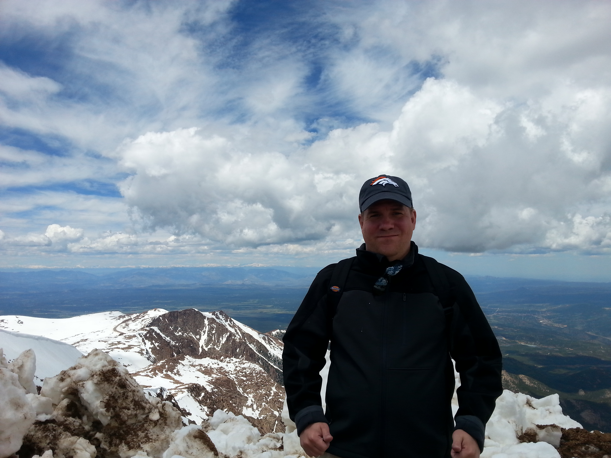
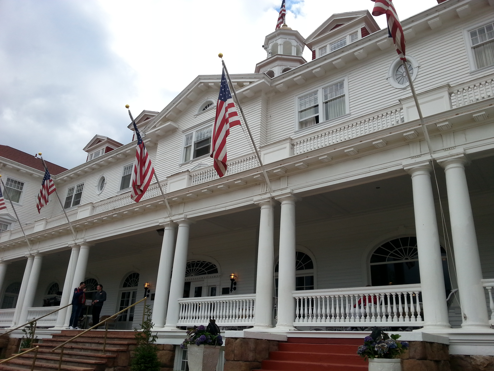
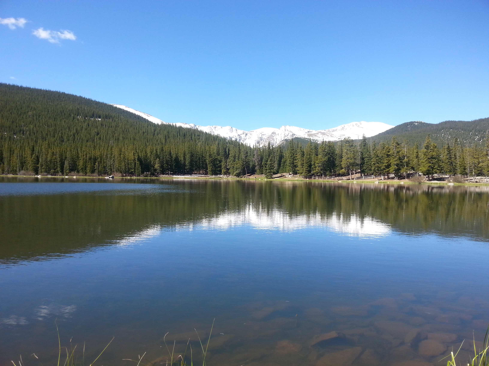

Last summer me and my wife took a trip to Colorado. We flew into Denver and went to Red Rocks. Went to the Denver Zoo. Even went to the Cardinals and Rockies baseball game. The highlight of our trip was a visit to the Rocky Mountains National Park. It was one of the best vacations I ever had.

Bull Elk feeding at Rocky Mountain National Park
St.Louis Cardinals vs. the Colorado Rockies
We were very excited to attend our first game at Coors Field. We got there early to see batting practice. There were alot of Cardinals fans at the game, especially for a road game. John Lackey pitched for the Cardinals and got rocked. Matt Holliday, my wife's favorite player, tore his quad muscle trying to catch a flyball. She thought he was dead. The Cardinals were losers on the night but at least we got a free hat out of it.

Players Warm Up before the Cardinals and Rockies Game
Pike's Peak
We drove down to Colorado Springs to take a train to the top of Pike's Peak. We sat across from 2 old ladies on the train ride up. The old lady tried to hand me a bottle of water. I said,"No thanks. I'm good". She looked at me and said, "No. I wasn't offering it. I wanted you to open it." I sheepishly opened it. We made it to the top and had quite a view.

Me at 14,114' feet elevation
Ghost Hunting at the Stanley Hotel
We drove up to Estes Park after our time in Denver. We had dinner and went on a Ghost Hunting trip at the Stanley Hotel. The Stanley is famous as the inspiration for the Stephen King book the Shining. We had a fun night. We saw a door close by itself. Probably the wind. My wife thinks I captured a EVP on my phone. Probably a voice from another room. Overall it was an interesting thing to do on a vacation.

Exterior of Stanley Hotel
Rocky Mountain National Park
The highlight of the trip was hiking in the Rocky Mountains. The temperature was perfect. The air was so clean. The views were spectacular. I never felt so at home as I did in the Rocky Mountains those few days. It was beautiful.

Echo Lake
"The Mountains Are Calling and I Must Go..." - John Muir